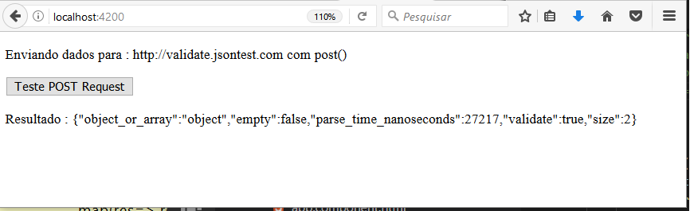

No Angular, para enviar dados para o servidor, no método Http.post() precisamos passar a URL do servidor, o objeto a ser postado e uma opção request que é opcional.
Na opção request podemos definir tanto os headers do request como o content-type. A classe Headers é usada para criar um header request e RequestOptions é usado para criar uma opção de solicitação usando headers, credenciais etc.
O método Http.post() retorna uma instância do tipo Observable do tipo Response; usando o Response do angular podemos acessar o status da resposta, os cabeçalhos, etc. Vejamos a sua sintaxe:
post(url: string, body: any, options?: RequestOptionsArgs) : Observable<Response>
Para usar os recursos do Http.Get precisamos fazer o seguinte:
1 - precisamos importar a biblioteca HttpModule em @NgModule usando o metada imports na aplicação module:
import { NgModule } from '@angular/core';
import { BrowserModule } from '@angular/platform-browser';
import { HttpModule } from '@angular/http';
@NgModule({
---------
---------
imports: [
BrowserModule,
HttpModule
]
---------
---------
})
2 - Precisamos realizar a comunicação com servidor em uma classe service e não em um componente. Na classe de serviço usamos a injeção de dependência no construtor da classe para obter uma instância Http:
constructor(private http:Http) { }
3 - Precisamos passar a URL e os dados a serem postados para o método http.post()
Observable<Response> ob = this.http.post(this.url,params);
Neste artigo vamos acessar um serviço pronto localizado neste link: http://validate.jsontest.com e vamos postar informações para dois objetos no formato abaixo para serem validados:
{
var1 : 'Teste',
var2 : 1000
}
Crie um novo projeto Angular usando o comando : ng new acessowebapipost
1- No arquivo app.module.ts importe a biblioteca HttpModule :
import { HttpModule } from '@angular/http';
import { BrowserModule } from '@angular/platform-browser';
import { NgModule } from '@angular/core';
import { AppComponent } from './app.component';
@NgModule({
declarations: [
AppComponent,
],
imports: [
BrowserModule,
HttpModule
],
bootstrap: [AppComponent]
})
export class AppModule { }
2 - Crie o serviço HttpTestService no arquivo http-test.service.ts usando o seguinte comando do Angular CLI : ng g service http-test
Inclua o código abaixo neste arquivo:
import { Injectable } from '@angular/core';
import { Http, Response } from "@angular/http";
import 'rxjs/add/operator/map';
import { Observable } from "rxjs/Observable";
import {Headers} from '@angular/http'
@Injectable()
export class HttpTestService {
constructor(private _http : Http) { }
postJSON() {
var json = JSON.stringify({var1: 'teste', var2: 1000});
var params = 'json=' + json;
var cabe = new Headers();
cabe.append('Content-Type', 'application/x-www-form-urlencoded');
return this._http.post('http://validate.jsontest.com',
params, {
headers : cabe
})
.map(res=> res.json());
}
}
Temos o serviço HttpTestService definindo o método postJSON() que usa o método http.post() para enviar informações de objeto { var: 'teste' , var2: 1000} para http://validate.jsontest.com para ser validado.
3 - Abra o arquivo app.component.ts e altere o seu código conforme abaixo:
import { HttpTestService } from './http-test.service';
import { Component } from '@angular/core';
@Component({
selector: 'app-root',
template: `
<p>
<Label>Enviando dados para : http://validate.jsontest.com com post()</Label>
</p>
<button (click)="onTestPost()">Teste POST Request</button>
<p>Resultado : {{postData}}</p>
` ,
providers : [HttpTestService]
})
export class AppComponent {
postData : string;
constructor(private httpService : HttpTestService){}
onTestPost() {
this.httpService.postJSON()
.subscribe(
data => this.postData = JSON.stringify(data),
error => alert(error),
() => console.log("acesso a webapi post ok...")
);
}
}
Neste código temos :
HttpTestService : import { HttpTestService } from './http-test.service';Button e no evento Click disparamos o método onTestPost()onTestPost() onde usamos o método getCurrentTime do serviço;Executando o projeto iremos obter o seguinte resultado:
